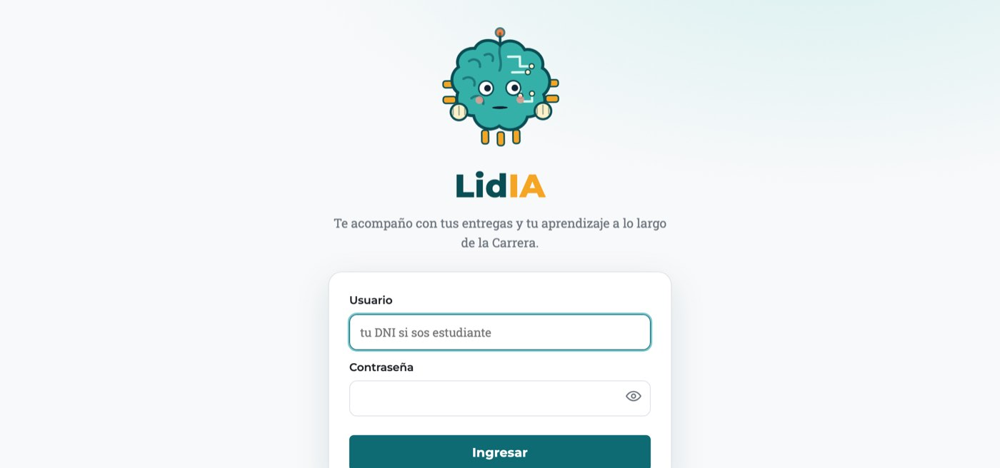
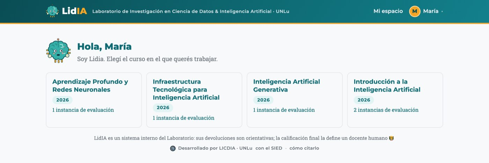
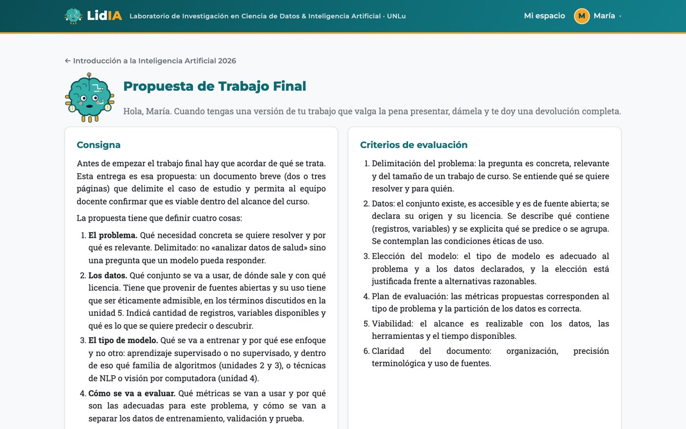
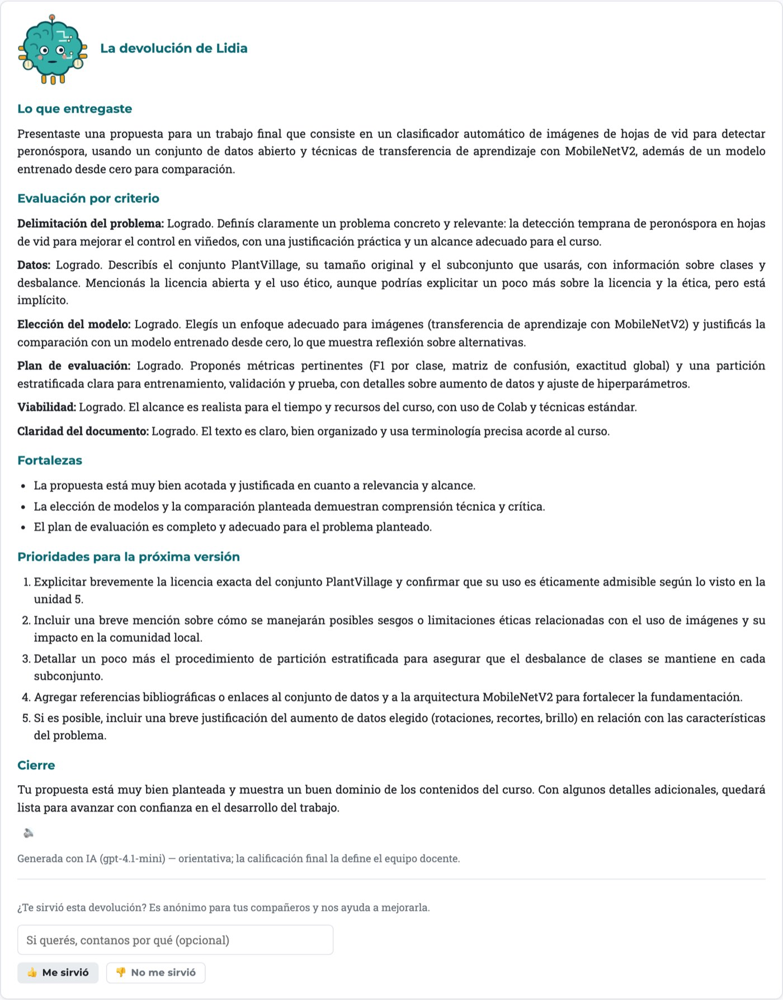
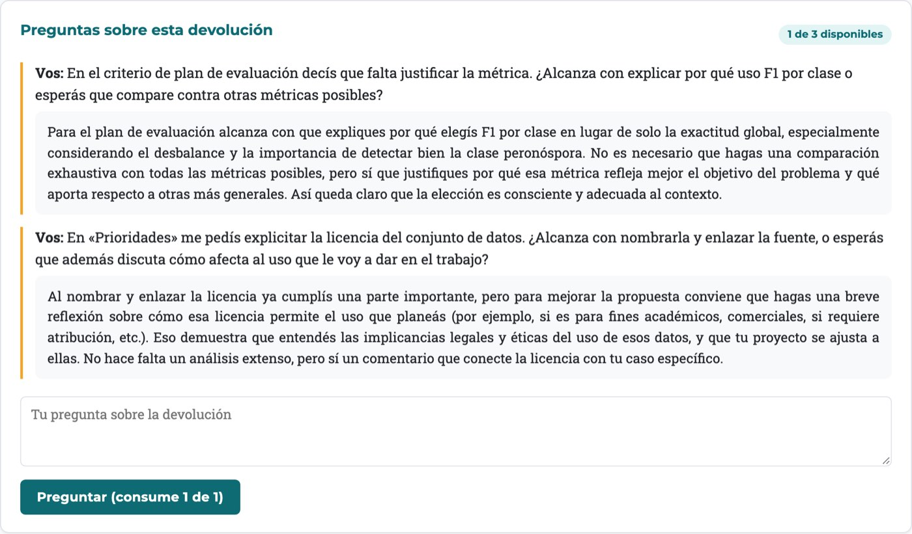
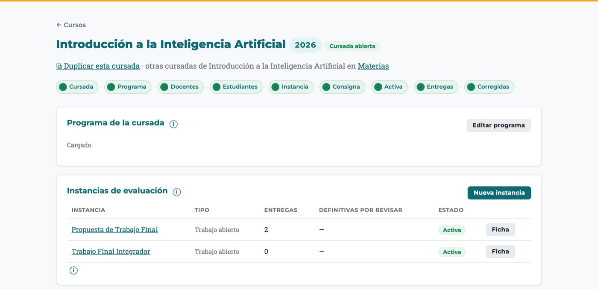
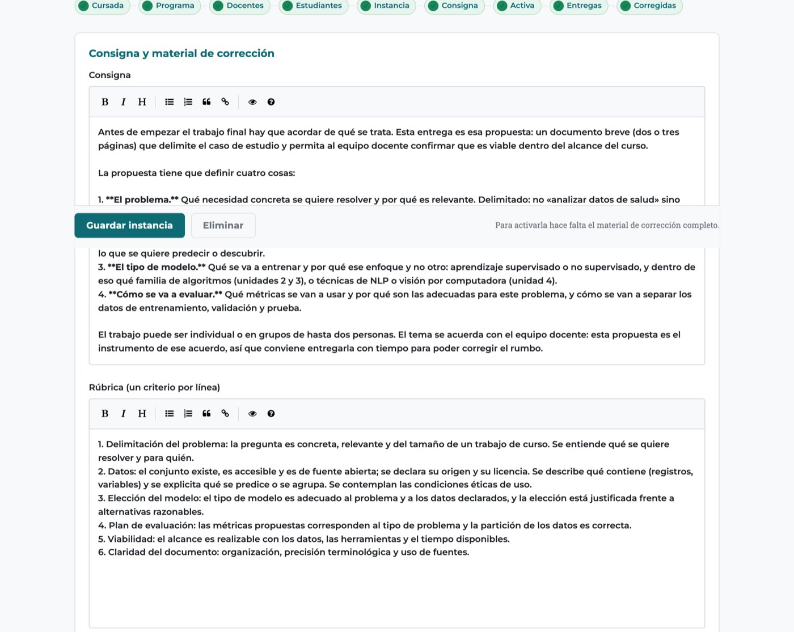
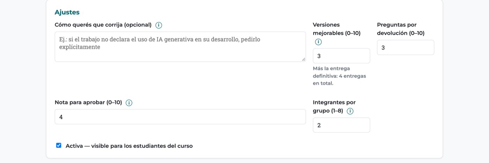
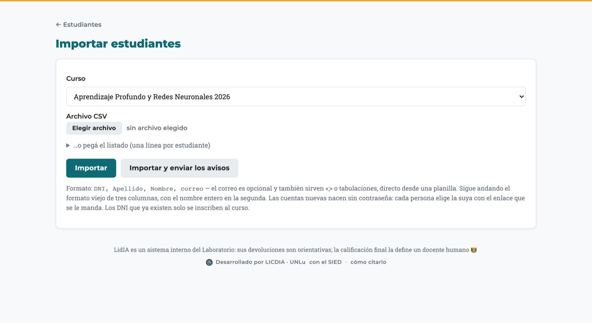
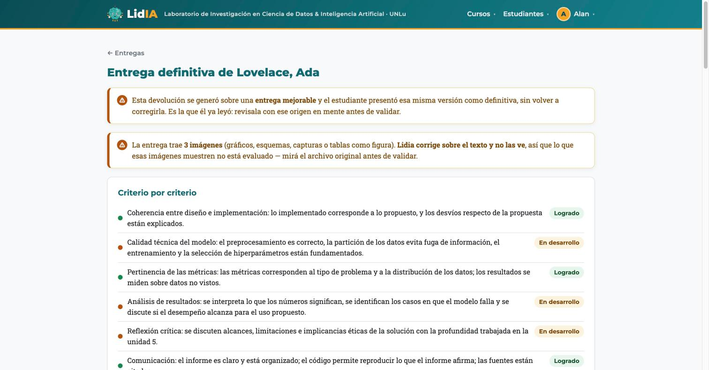

Instructivo
Paso a paso, con las pantallas del sistema
LidIA se usa desde el navegador, sin instalar nada. Lo que sigue muestra las pantallas reales: a la izquierda lo que hace quien cursa, a la derecha lo que hace el equipo docente.
El sistema manda por correo un enlace de un solo uso, válido una semana. Ese enlace abre la pantalla donde cada persona fija su propia contraseña. Nadie más la conoce: no queda escrita en ningún lado ni la ve la coordinación. Si el correo no aparece, conviene mirar la carpeta de correo no deseado antes de pedir otro.
Después se entra con el usuario, que en la UNLu es el documento de identidad, y esa contraseña. Se cambia cuando se quiera desde Tu cuenta, en el menú del nombre propio. Si la cursada entra por el campus virtual, nada de esto hace falta: la sesión se abre sola desde el aula de Moodle.

Al entrar aparecen las cursadas en las que estás inscripto, con la cantidad de instancias de evaluación que tiene cada una.

Cada instancia muestra la consigna y, al lado, los criterios con los que se va a evaluar. Son los mismos que va a usar la devolución, criterio por criterio, así que conviene leerlos antes de escribir y no después.

Se sube un archivo: PDF, Word, una notebook .ipynb, una página HTML o texto plano. Cada entrega se evalúa como un trabajo completo, no como un borrador: una versión inmadura consume el intento igual, y el sistema avisa cuántos quedan antes de confirmar.
La devolución no es un puntaje: recorre la rúbrica criterio por criterio, dice qué quedó logrado y qué no, y cierra con una lista de prioridades para la versión siguiente. Es lo que hay que trabajar antes de volver a entregar.

Sobre cada devolución se pueden hacer hasta tres preguntas. LidIA aclara lo que escribió: qué significa una observación, dónde aplica, cómo encararla. No evalúa contenido nuevo ni reescribe el trabajo, y en los exámenes nunca revela la respuesta esperada.

Cuando una versión convence, se la marca con Presentar esta versión como definitiva. Esa entrega no consume prácticas y sigue otro camino: la propuesta de devolución la ven solamente los docentes, que la editan y la aprueban. Recién entonces llega, con la calificación cuando corresponde. El equipo docente también puede reabrir la entrega y pedir una versión nueva.
Es el tablero de la materia. Arriba, una tira de pasos indica qué está hecho y qué falta para que la cursada funcione: programa, docentes, estudiantes, instancia, consigna, activación, entregas y correcciones. Debajo, las instancias de evaluación con sus entregas pendientes de revisar, y más abajo el listado de inscriptos.
El programa se carga una vez y vale para toda la cursada: es el contexto que usa LidIA para situar los comentarios en las unidades que se dictaron. No es criterio de evaluación; el criterio es la consigna y la rúbrica.

Primero el nombre, el tipo y las fechas; después el material. Hay tres tipos:
| Trabajo abierto | Se evalúa contra consigna y rúbrica, criterio por criterio. Admite entregas sucesivas. |
|---|---|
| Examen escrito | Preguntas con su respuesta esperada y su puntaje. En las prácticas se señala el error y se orienta el repaso sin revelar la respuesta; en la corrección final se revela y se propone una calificación por puntaje. |
| Opción múltiple | Preguntas con opciones y clave por ítem, con una única oportunidad de entrega. |
Se tipean en la ficha o se traen desde un documento: el sistema ofrece una plantilla de Word para descargar, completar y volver a subir, y muestra lo que leyó antes de guardar nada.
La rúbrica es lo que más determina la calidad de la devolución, porque la devolución se organiza siguiéndola. Conviene un criterio por línea, redactado en términos observables. Las respuestas esperadas y la clave son material interno: el estudiantado no las ve nunca, tampoco a través de las preguntas.

Cuántas versiones mejorables admite, cuántas preguntas por devolución, la nota de aprobación y los integrantes por grupo. También se puede agregar una indicación de corrección propia, por ejemplo pedir que el trabajo declare el uso de IA generativa.
Toda instancia nace en Borrador y el estudiantado no la ve. Se publica con el tilde Activa — visible para los estudiantes del curso. Si falta material de corrección, el sistema no la activa y dice qué falta.

De a una persona por vez, o en lote pegando el listado desde una planilla con el formato documento, apellido y nombre, correo. Si el documento ya existe en el sistema, la persona queda inscripta sin duplicarse. Cada alta dispara el correo con el enlace para fijar la contraseña.

Las entregas definitivas esperan en Entregas. La pantalla de revisión muestra el trabajo junto a la propuesta de devolución, criterio por criterio, con cuatro estados posibles: logrado, en desarrollo, insuficiente o no presente.
Esa propuesta se edita libremente. Con Validar y publicar la devolución llega al estudiante, en la aplicación y por correo. Con Reabrir (pedir nueva versión) vuelve para que la rehaga. La calificación se deriva de los estados y la confirma quien revisa; las notas de la cursada se descargan en CSV.

Las dudas sobre la consigna, los criterios o la calificación se resuelven con el equipo docente de la cursada. Las dificultades de acceso, con el laboratorio.
Sobre LidIA licdia@unlu.edu.ar